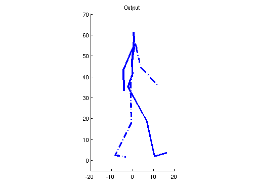
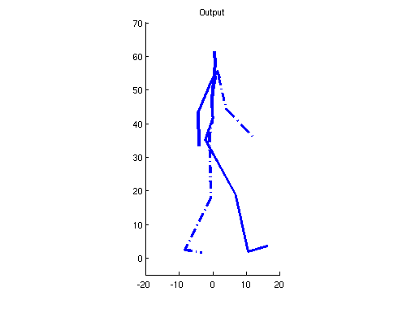
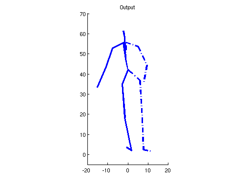
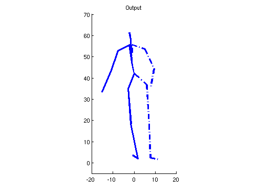
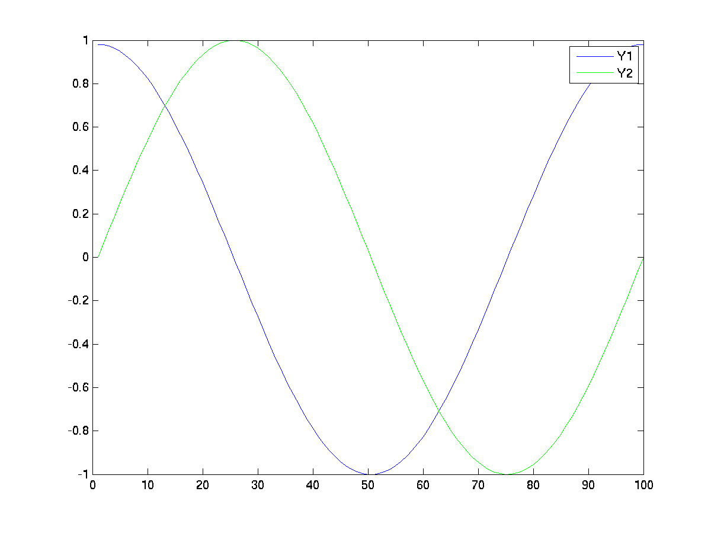
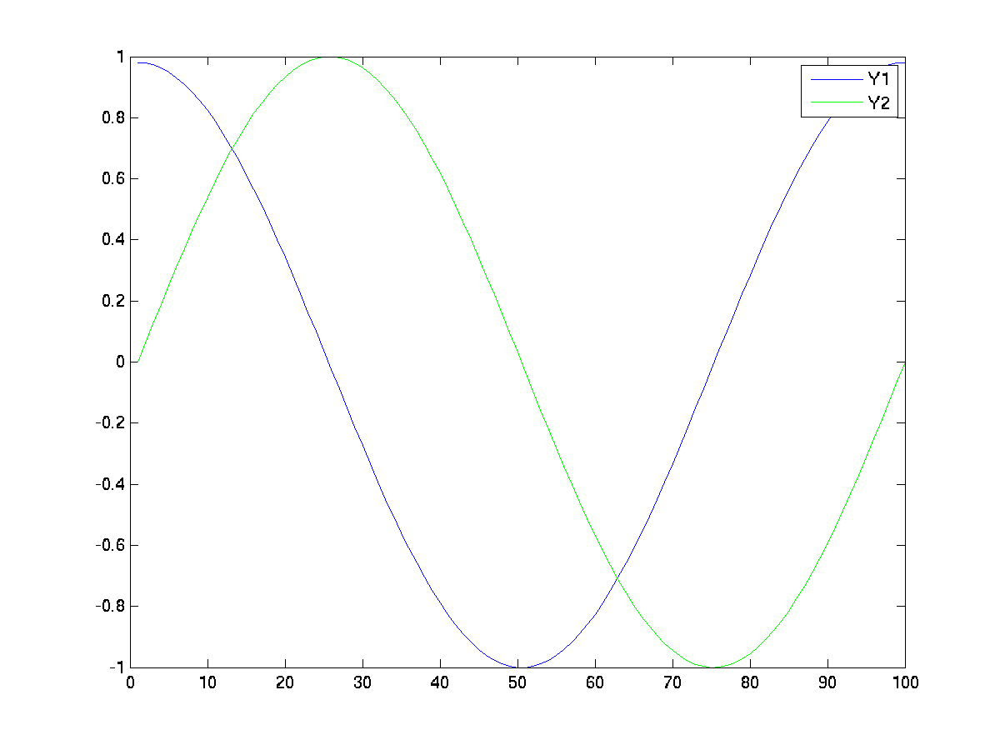

Shared GP-LVM Software
This page describes examples of how to use the Gaussian process latent variable models with shared latent spaces (SGPLVM). RELEASEINFORMATION
Release Notes
Current Release
Updated release with FOLS model from AISTATS 2010 added.Version 0.05
First release of software.Examples
SGP-LVM
>> demSgplvm
Demo script to create three different types of Shared GP-LVM models
either using random data or a synthetic example of human motion.
>> sgplvm_model_type = 'mlmi2008';
>> data_type = 'human';
The motion example was created by rotating a static pose around its
own axis both counter-clockwise and clockwise but use the same
descriptors which introduces ambiguities with respect to the heading
direction in the view-plane.
The SGP-LVM model created has a five dimensional latent space with two
private directions for each observation space and a single shared
direction. The model is initialised using the NCCA consolidation.
Kernel matrices to which NCCA consolidation is used to initialise the SGP-LVM model.
 
Unimodal silhouette.
 
Bi-modal silhouette
SGP-LVM FOLS
>> dem_sgplvm_fols
Demo script that generates the toy example shown in Figure 1 in the paper
 
Observed data used for the example. Each observed space is the projection of the circle in the left most image onto each separate axis as shown in the right image.
The resulting embedding after learning a SGPLVM-FOLS model. The data is factorized into a single shared dimension and one single private dimension associated with each observed data space.